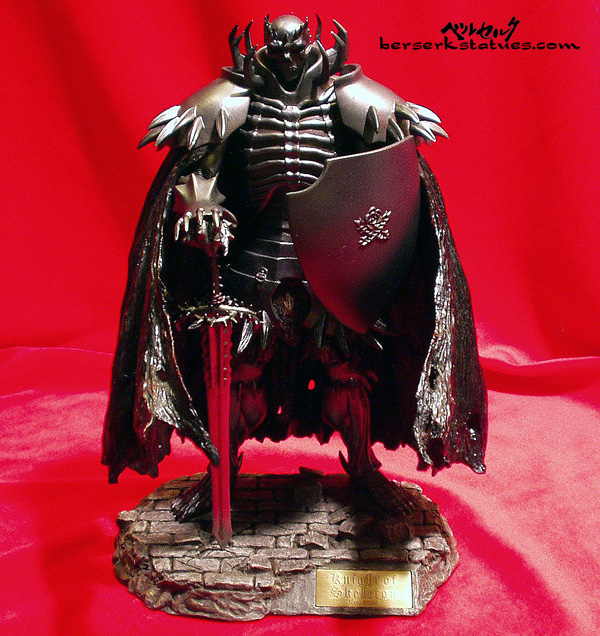
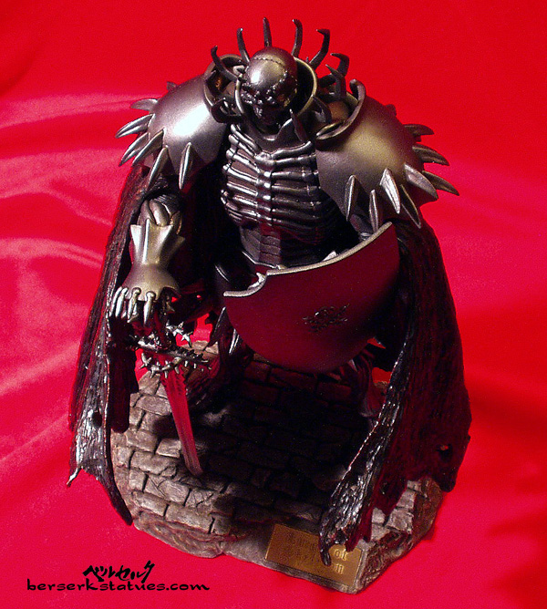
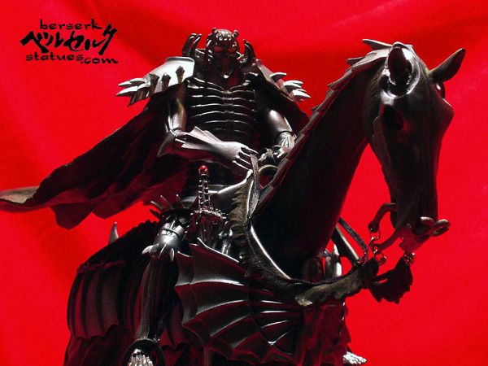
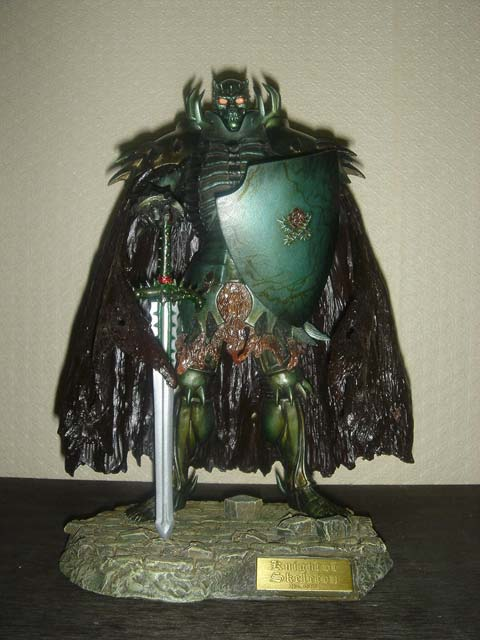
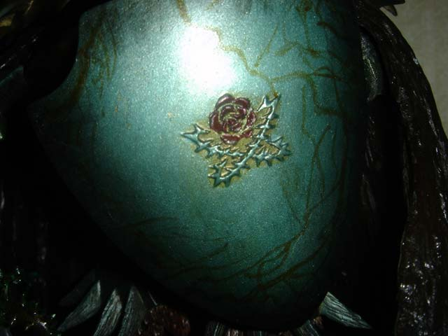
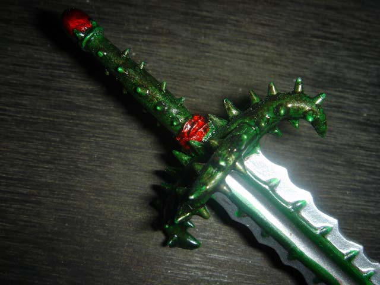
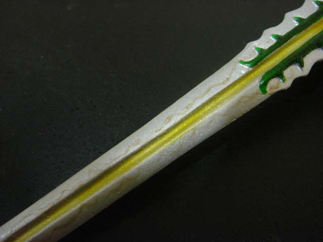
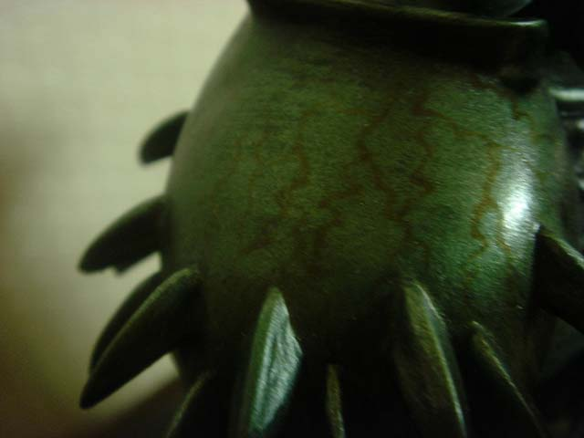
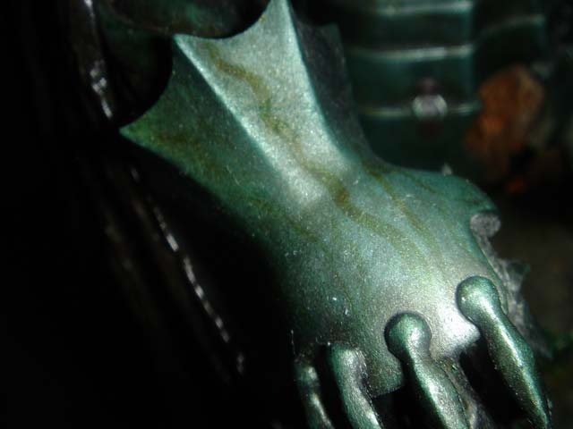

Hi John! So here's my SK reference page. Hope it's useful.
Character Info:
Skullknight is what Guts might be in several hundred years. It's certain
that Skullknight used to be a human but the readers are uncertain how he came
to be who he is now. He is about 1000 years old.
It is known that Skullknight was given an armor by the same witch that gave Guts his Berserker armor. Somehow along the centuries, Skullknight became this EXTREMELY powerful warrior and is pretty much the only worthy ally of Guts. In fact, Skullknight is MUCH stronger than Guts is currently. However, although they are allies and share a common enemy, Skullknight and Guts don't really work together. Though on occasions, Skullknight pops up in the middle of the night, out of nowhere, and gives advice to Guts (advice or sometimes a warning/omen of some sort).
There is definitely some magical about Skullknight. His eyes glow and he seems to have a very complex past. I'm sure the author will go more into detail as the years go on. As of now, he is portrayed as a very God-like being, who has been traveling alone for hundreds of years, seeking revenge by killing Void (the leader of the God Hand, which is a group of 5 demons, who are the right hand of Evil). He seems to know all the answers that Guts is searching for but he tends to be very cryptic whenever he talks. As stated earlier, Skullknight is extremeley powerful, but he isn't the type to get all bloody like Guts or Zoddo. He sort of seems to be above it all.
He rides a horse and usually appears only at night, although there have been a few scenes where he appears during the day. All in all, Skullknight is a very mysterious character.
Color Scheme:
Well, in terms of the most accurate color scheme, I think this one portrays
him best:



Skullknight is generally silver, with glowing eyes, and a black cape. You can see more of the above statue here: http://www.berserkstatues.com/statues/sk.html
However, I think the silver paint job can use a bit of "spicing up". Take a look at this statue below. This one is the "Weathered Green" variant:






You can see more pictures of this statue here: http://bonkura.cafe24.com/zeroboard/view.php?id=toys&no=12
Basically, what I'm thinking, is if you could somehow paint Skullknight like the "Weathered Green" version, but instead of using green as the base color, you use silver. And instead of using neon green highlights (and those veiny designs), you can use red... or black... something else that you think will look realllllly nice with silver. Does this make sense? Will this work?
In regards to the little design on the shield, the rose thing should be red. And on the hilt of the sword, those two things should be red as well (as pictured above).
I prefer the cape to be black but I'm definitley open to having it "spiced up" if you have any ideas.
Base:
Well, of course, to stay consistent with the previous 3 Headlong
kits, I'd like the base to keep that sandpaper ground on top of the black base
look. In terms of other things to add... I'm open to suggestions. Usually when
Skullknight makes an appearance in the story, it's in the middle of the forest,
at night time, under the moonlight. I'm hesitant to put trees on the base since
the Berserker kit already had something similar (although they were burned trees).
I think anything "stony" would work fine... Also, if it helps any,
it's believed that Skullknight used to be a King when he was human. Somehow,
his throne was stripped away from him (probably by Void). Maybe it'll be cool,
if you can put a stone throne behind him (sorta like that throne you have for
your Dr. Doom kit). Actually, I think that would be really neat, but I'm guessing
it would require a lot of work (unless maybe you have a pre-made throne/chair
from some action figure sitting around). I dunno, what do you think?